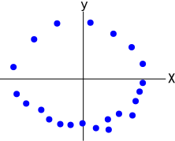

Topological Data Analysis - Persistent Homology
This is Part 1 in a series on topological data analysis. See Part 2 | Part 3 | Part 4 | Part 5
Introduction¶
I find Topological Data Analysis (TDA) to be one of the most exciting (yet under-rated) developments in data analysis and thus I want to do my part to spread the knowledge. So what's it all about? Well there are two major flavors of TDA: persistent homology and mapper. Both are useful, and can be used to supplement each other. In this post (and the next couple of posts) we will cover persistent homology. TDA in general is very mathematical (it was born out the "lab" of a mathematics group at Stanford, particularly Gunnar Carlsson and his graduate student Gurjeet Singh, although the foundations had been developed for years before by others) and thus we cannot really study it without learning a lot of math. Hence, this post is going to be just as much a tutorial on various topics in higher math as it is TDA, so if you're not that interested in TDA but want to learn about topology, group theory, linear algebra, graph theory and abstract algebra, then this might be useful just in that regard. Of course, I will not cover these math topics in as much detail or with as much rigor as a textbook would, but my hope is if you understand what I present here, reading a textbook (or math papers) will make a whole lot more sense.
What is persistent homology and why should I care?¶
Think of a typical data set being a big Excel file with columns being various parameters and the rows being individual data points. Say there are 100 columns and 900 rows. If we think of the rows as being data points, then we can think of them as being 100-dimensional data points. Obviously, helplessly constrained to our 3-dimensional universe, we have no way of seeing what are data looks like. Well, of course there are numerous methods for projecting high-dimensional data down to a lower dimensional space that we can see. Usually we want to see our data so we can easily identify patterns, particularly clusters. The most well-known of these visualization methods is probably principal component analysis (PCA). But all of these methods involve transforming our original data in a way that loses some potentially valuable information. There's no free lunch here, if you use PCA to project 100-dimensional data to a 2-dimensional plot, you're going to be missing something.
Persistent homology (henceforth just PH) gives us a way to find interesting patterns in data without having to "downgrade" the data in anyway so we can see it. PH let's us leave our data in it's original, ultra-high dimensional space and tells us how many clusters there are, and how many loop-like structures there are in the data, all without being able to actually see it.
As an example, consider a biologist studying some genes in cells. She uses fancy equipment to measure the expression levels of 100 genes in 900 different cells. She's interested in genes that might play a role in cell division. Being the cutting-edge biologist she is, she utilizes persistent homology to analyze her data and PH reports her data has a prominent cycle, which she further analyzes and is able to confirm that a subset of her 100 genes seem to have a cyclical expression pattern.
The field of topology in mathematics studies properties of spaces where all we care about is the relationship of points to one another, unlike geometry, where exact distances and angles are important. Thus PH let's us ask topological questions of our data in a reliable way without having to adulterate the data in anyway. The conventional output from persistent homology is a "barcode" graph that looks like this:
 Source: Topaz CM, Ziegelmeier L, Halverson T (2015) Topological Data Analysis of Biological Aggregation Models. PLoS ONE 10(5): e0126383. https://doi.org/10.1371/journal.pone.0126383
Source: Topaz CM, Ziegelmeier L, Halverson T (2015) Topological Data Analysis of Biological Aggregation Models. PLoS ONE 10(5): e0126383. https://doi.org/10.1371/journal.pone.0126383
This graph encodes all the topological features we're interested in a compact and visual way.
Intended audience¶
As usual, my intended audience is people like me. I'm a programmer with an interest in TDA. I majored in Neuroscience in college so I have no formal mathematics training beyond high school. Everything else has been self-taught. If you have a degree in mathematics, this is not the post for you, but you can take a look at my extensive reference list.
Assumptions¶
While I always attempt to make my posts as accessible to a general audience with a programming background and some basic math knowledge, I do make a few knowledge assumptions here. I assume you have a foundational understanding of the following:
- High-school algebra
- Set theory
- Python and Numpy
but I will try to explain as much as possible along the way. If you've followed my previous posts then you can probably follow this one.
Set Theory Review¶
We will just very quickly review basics of set theory, but I am assuming you already have the necessary background knowledge of set theory, this is just a refresher and guide for the notation we'll be using.
Recall a set is an abstract mathematical structure that is an unordered collection of abstract objects, typically denoted by curly braces, e.g. the set $S = \{a,b,c\}$. The objects contained in a set are called its elements. If an element $a$ is contained in a set $S$, then we denote this relationship as $a \in S$ where the symbol $\in$ is read "in" ($a$ in $S$). Or if an element $d$ is not in a set $S$ then we denote it as $d \not\in S$. Intuitively, one can think of a set as a box or container and you can add various objects into the box (including other boxes).
A subset $Z$ of a set $S$ is a set with all elements also in $S$. A strict subset is denoted $Z \subset S$, which means there is at least one element in $S$ that is not in $Z$, whereas $Z \subseteq S$ means $Z$ could be a strict subset of $S$ or it could be identical to $S$. For every set, the empty set (denoted $\emptyset$), and the set itself are (non-strict) subsets, i.e. for a set $S$, $\emptyset \subseteq S$ and $S \subseteq S$.
The symbol $\forall$ means "for all" and the symbol $\exists$ means "there exists". For example, we can say something like $\forall x \in S$ which means "for all elements $x$ in $S$". Or we can say, $\exists x \in S, x = a$, which means "there exists an element x in the set $S$ for which $x = a$".
There are logical operators we use called AND (denoted $\land$) and OR (denoted $\lor$). For example, suppose we have two sets $S_1 = \{a,b,c\}, S_2 = \{d,e\}$, we can propose $a \in S_1 \land a \in S_2$, which we can evaluate to be a false proposition since $a$ is not in $S_2$. The proposition $a \in S_1 \lor a \in S_2$ is evaluated to be true since the element $a$ is one or both of the two sets in the proposition.
The union (denoted $\cup$) of two sets $S_1, S_2$ is a new set $S_3$ that contains all the elements from $S_1$ and $S_2$. For example, if $S_1 = \{a,b,c\}, S_2 = \{d,e\}$ then $S_1 \cup S_2 = \{a,b,c,d,e\}$.
We can use set-builder notation to describe this as $S_1 \cup S_2 = \{x \mid \forall x \in S_1, \forall x \in S_2\}$ or equivalently $S_1 \cup S_2 = \{x \mid x \in S_1 \lor x \in S_2\}$. The part before the vertical pipe | describes the elements that compose the set whereas the part after the pipe describe the conditions those elements must meet to be included in the set. For example, if we want to build the set of points that form a two-dimensional circle, $C = \{(a,b) \mid a^2 + b^2 = 1\}$. This brings up ordered sets or sequences where the order of the elements does matter and we denote these by using parentheses, e.g. $(a,b,c) \neq (c,b,a)$ whereas $\{a,b,c\} = \{c,b,a\}$.
The intersection (denoted $\cap$) of two sets $S_1, S_2$ is a new set $S_3$ that contains the elements that are shared between $S_1$ and $S_2$, that is, $S_1 \cap S_2 = \{x \mid x\in S_1 \land x\in S_2\}$. For example, if $S_1 = \{a,b,c\}, S_2 = \{a,b,d,e\}$ then $S_1 \cap S_2 = \{a,b\}$.
The size or cardinality of a set is the number of elements in that set. For example, if $S = \{a,b,c\}$ then the cardinality of $S$, denoted $\vert{S}\vert = 3$.
A function is a relation between the elements in one set to another set. We can visualize a function as so:
 (source: < https://en.wikipedia.org/wiki/Function_(mathematics) >)
(source: < https://en.wikipedia.org/wiki/Function_(mathematics) >)
Here we have two sets $X = \{1,2,3\}$ and $Y = \{A,B,C,D\}$ and a function $f$ that maps each element in $X$ (called the domain) to an element in $Y$ (the codomain). We denote $f(1) = D$ to mean that the function $f$ is mapping the element $1 \in X$ to $D \in Y$.
A generic mapping or relation can be any mapping of elements in one set to another set, however, a function must only have one output for each input, i.e. each element in the domain can only be mapped to a single element in the codomain.
We define a function by building a new set of ordered pairs. For two sets $X$ and $Y$, we denote a function $f : X \rightarrow Y$ to be a subset of the Cartesian product $X \times Y$ (i.e., $f \subseteq X \times Y$). A Cartesian product is the set of all possible ordered pairs between elements in the two sets.
For example, the set that defines the function $f$ from the picture above is $f = \{(1,D), (2,C), (3,C)\})$. So if we want to know the result of $f(1)$ then we just find the ordered pair where $1$ is in the first position, and the second position element is the result (in this case its $D$).
The image of a function $f : X \rightarrow Y$ is the subset of $Y$ whose elements are mapped to elements in $X$. For example, for the function depicted above, the image of the function is $\{C,D\}$ since only those elements are mapped to elements in $X$.
Given a function $f : X \rightarrow Y$, the preimage of a subset $K \subseteq Y$ is the set of elements in $X$ that are mapped to elements in $K$. For example, the preimage of the subset $K = \{C\}$ from the depicted function above is the set $\{2,3\}$.
Topology Primer¶
As you might have guessed, TDA involves the mathematical field of topology. I'm far from a mathematician, but we have to have a basic context so I'll do my best to explain the relevant aspects of topology in the least jargon-y and most computational (that's how I tend to think) way possible.
So mathematics in general is broken up into many fields of study, such as geometry, topology, linear algebra, etc. Each field is essentially defined by the mathematical objects under study. In linear algebra, the mathematical objects of interest are vector spaces. In topology, the mathematical objects are topological spaces. And since set theory is taken as a foundation of mathematics, all these mathematical objects are simply sets (collections of abstract things) with specific rules about what form the sets must be in and how they can be transformed or operated on.
Let's define what a topological space is now. This is one of several equivalent definitions of a topology (taken from wikipedia):
Definition (Topological Space)
A topological space is an ordered pair $(X, \tau)$, where $X$ is a set and $\tau$ is a collection of subsets (subset symbol: $\subseteq$ ) of $X$, satisfying the following axioms:
- The empty set (symbol: $\emptyset$) and $X$ itself belong to $\tau$.
- Any (finite or infinite) union (symbol: $\cup$ ) of members of $\tau$ still belongs to $\tau$.
- The intersection (symbol: $\cap$ ) of any finite number of members of $\tau$ still belongs to $\tau$.
The elements of $\tau$ are called open sets and the collection $\tau$ is called a topology on $X$.
Okay so what the hell does that even mean and who cares? Let's give a really simple example. So let's just make up an abstract set of objects that happen to be some of the English alphabet letters. Here's our set, $X = \{a,b,c\}$. So we have a collection of 3 distinct objects and we want to define a topology on that set. Our topology τ (tau) is simply going to be a set of sets, it's a collection of subsets from X that satisfy the axioms of topology.
Let's give it a try, maybe our topology τ should be this: $\{\{a\},\{b\},\{c\}\}$. So our topology τ is a collection of single element subsets from X. Notice the difference in notation. If I had simply written $\tau = \{a,b,c\}$ that would merely be the same as $X$, just an ordinary set with 3 elements. No, $\tau$ is a set whose elements are also sets (even if those sets contain one element).
Ok, anyway, does our $\tau$ satisfy the axioms? Does the empty set and $X$ itself belong to $\tau$? Uh no. The empty set is $\{\}$ (or $\emptyset$) and $X$ itself is $\{a,b,c\}$, our $\tau$ did not have those two sets as members, so already our attempted topology failed. Let's try again. How about $\tau = \{\emptyset,\{a\},\{b\},\{c\}, \{a,b,c\}\}$. Now at least this τ satisfies the first axiom. The second axiom is less obvious, but take for example the union of $\{a\}$ and $\{b\}$, which yields $\{a,b\}$. Is $\{a,b\}$ in $\tau$? No it's not, so this attempted topology also fails.
Alright here's a legitimate topology on $X$... $\tau = \{\emptyset, \{a\}, \{a,b,c\}\}$. It satisfies the first axiom, it has the empty set $\{\}$ and the full $X$ set as members of $\tau$, and if you take the union of any combination of members of $\tau$, the resulting set is also a member of $\tau$.
For example, $ \{ \} \cup \{ a \} = \{ a \} $ (read: the empty set union the set $\{a\}$ produces the set $\{a\}$). Obviously the union of the empty set and $\{a\}$ must produce $\{a\}$ which is in $\tau$. We must verify for all possible unions and intersections that the results are still in $\tau$.
$ \{a\} \cup \{a,b,c\} = \{a,b,c\} $, which is also in $\tau$. $ \{a\} \cap \{a,b,c\} = \{a\}$, which is also in $\tau$.
Hence, the union or intersection of any elements in $\tau$ is also in $\tau$, thus we have ourselves a valid topology on $X$.
I know this all seems rather academic at this point, but keep with me and we will eventually get to a point of using this new knowledge for practical purposes.
Closeness¶
What is important about topological spaces as opposed to any other mathematical abstraction? Well, one important aspect is that topological spaces end up defining a notion of closeness between elements in a set that has a defined topology. In a "raw" set that has no structure defined, e.g. $Y = \{c,d,e\}$, it's just a collection of abstract objects. That's it, there's nothing more we say about this set or it's elements. But once we define a topology on $Y$, then we can answer questions like "is the element $c \in Y$ closer to $d$ than $e$ is to $d$?"
One of the fascinating things about mathematics is how so many things relate to each other and how there are almost always several ways of defining mathematical relationships, some of which are easier to grasp than others. So far we've been considering finite topological spaces, that is, the set $X$ for which we've defined a topology has a finite number of elements. Of course topological spaces do not have to be finite, and we'll eventually spend most of our time considering infinite topological spaces such as those defined on the set of real numbers. When we start to consider those types of spaces, visualizing them tends to be easier as we can often draw diagrams. As you've probably noticed, all this abstract non-sense about open sets defining a topological space seems really hard to grasp intuitively. As it turns out, however, there is another way to represent finite topological spaces, and that is by using directed graphs.
A little bit of graph theory¶
Definition (Graph)
A simple graph $G$ is a set of vertices (or nodes) $V$ paired with a set of edges (i.e. connections between vertices) $E$, whose elements are 2-element subsets of $V$. Hence, $G = (V,E)$.
Example: G(V,E) where $V = \{a,b,c,d\}, E = \{\{a,b\},\{a,d\},\{a,c\},\{c,d\}\}$

Definition (Directed Graph)
A directed graph (or digraph) $G(V,E)$ is a graph whose edges are ordered pairs of vertices from $V$. Thus the "connections" between vertices/nodes have direction. The first vertex in an ordered pair is the start and the second vertex is the end. When drawing the graph, the edges are arrows with the arrowhead facing toward and contacting the end vertex.
Example: G(V,E) where $V = \{a,b,c,d\}, E = \{(b,a), (a,d), (a,c), (c,d)\}$

Just for completeness sake, I want to mention a couple other properties we can impose on graph structures. We've already noted how graphs can have a direction property to the edges, but edges can also have a weight property, i.e. different edges can have different weights or strengths, implying that some connections are stronger than others. When drawing graphs with weighted edges, one way to depict this would be to simply make edges with bigger weights as proportionally thicker lines. Mathematically, a graph with vertices, edges, and weights is defined as a graph $G(V,E,w)$ where $w : E \rightarrow \mathbb R$ ($w$ is a function that maps each edge in E to a real number, it's weight). Similarly, one can have a function that endows each vertex with a weight. One might depict this where nodes (vertices) are of different sizes reflecting their respective weights.
Visualizing Finite Topology¶
It turns out that one can build a set of binary relations called preorders between elements in a set $X$ with topology $\tau$. The binary relation preorder is both reflexive (every element is related to itself, $a \sim a$) and transitive (if $a$ is related to $b$, and $b$ is related to $c$, it implies $a$ is related to $c$, i.e. $a \sim b \land b \sim c \Rightarrow a \sim c$). [The symbol ~ is used generically to denote the relation of interest]. This preorder relation (more precisely called a specialization preorder on $X$) can be determined by examining pair-wise relationships of elements in $X$ one at a time. The specialization preorder relation is generally denoted by the symbol $\leq$ (but it is not the same as the less-than-or-equal-to sign that you're used to; there are only so many convenient symbols so things tend to get re-used).
Here's the definition of a specialization pre-order on a topological space $(X, \tau)$ (note there are other equivalent definitions).
Definition (Specialization Pre-order)
$ \text{ $x \leq y$, if and only if $y$ is contained in all the open sets containing $x$ } $
And remember that open sets are the elements of the topology $\tau$. Once we've determined that $x \leq y,\ \forall x,y \in X$, then we can say that $x$ is a specialization of $y$. This kind of means that $y$ is more general than $x$ since it appears in more open sets.
Example (Topology)
To illustrate a graphic represention of our previous finite topological space, let's expand our topology on $X = \{a,b,c\}$. Now, $\tau = \{\{\}, \{a\}, \{b\}, \{a,b\}, \{b,c\}, \{a,b,c\}\}$
To define the specialization preorder on this topological space, we need to enumerate all the possible pairings of points in the topology and figure out if the preorder relation $\leq$ is satisfied for each pair. Let's just focus on one pair, $(c,b)$, so we want to ask if $c \leq b$ is true. According to our definition of specialization preorder, if $c$ is in fact $\leq b$, then $b$ will be contained in all of the open sets that contain $c$. So let's list out all the open sets that contain $c: \{b,c\}, \{a,b,c\}$. As you can see, both of these open sets that contain $c$ also contain $b$, therefore, $c \leq b$ is true. An important note is that the preorder relation does not imply equality when two elements are specializations of each other, i.e. if $x \leq y \land y \leq x \not \Rightarrow x = y$
I will list all the true and untrue preorderings on $X$ and then we can build the topological space into a visualization graph.
$
a \not\leq b \\
a \not\leq c \\
b \not\leq a \\
b \not\leq c \\
c \not\leq a \\
c \leq b \\
$
There is only one true preorder relation between all pairs of points in $X$. In order to make a directed graph from a preorder on a topological space $(X,\tau)$, you simply take the points in $X$ as vertices of the graph and create a directed edge between two vertices that have a preorder relation, where the arrow points from the specialization point to the more general point (i.e. if $x \leq y$ then our graph will have an edge starting from $x$ and pointing to $y$). Any points without relations to other points are just disconnected nodes. Here's the visualized graph of our example preorder on $X$.

Example (Specialization preorder graph)
Here's another example on a different topological space. Let $Z = \{a, b, c, d\}$ be a set with the topology $\tau_Z = \{Z, \emptyset, \{b\}, \{a, b\}, \{b, c, d\}\}$. Listing the specialization preorder on $Z$ is left as an exercise for the reader. The graph of this topological space resulting from its specialization preorder is shown.

Just like you can take any finite topological space, generate a specialization preorder on it and build a graph, you can also take a graph built by a preordering and generate its topology. In fact, by just looking at the graph you can determine a lot of the topological properties of the space. With this view, you can interpret a finite topology as a set of points with paths between them.
Connectedness¶
I'll digress here to define another property of topological spaces called connectedness. If you draw two separated circles on a sheet of paper those two shapes represent a topological space that is disconnected since there is no line or path connecting the circles. In this case we would say there are two components in the space. The intuiton captures the sense of how many "whole pieces" are in the space. The definition of connectedness in topology abstracts and generalizes the intuitive notion of "pieces" in a space.
Definition (Connectedness)
A topological space $(X,\tau)$ is said to be connected if $X$ is not the union of two disjoint nonempty open sets. Consequently, a topological space is disconnected if the union of any two disjoint nonempty subsets in $\tau$ produces $X$.
Looking back at the previous example, with $X = \{a,b,c\}, \tau = \{\{\}, \{a\}, \{b\}, \{a,b\}, \{b,c\}, \{a,b,c\}\}$, we can determine that this topological space is disconnected because the union of the disjoint (they dont share any common elements) open sets $\{a\} \cup \{b,c\} = X$. Alternatively, if we look at the graph that we generated from our preordering on $X$, we can visually see that $c$ and $b$ are connected by an edge but $a$ is a disconnected point. The graph for the example with set $Z$, however, demonstrates that this topological space is connected, all the vertices are connected in some way.
With these types of general "pure" topological spaces, we can't say anymore than "closeness", we don't have a notion of distance. We know $b$ is close to $c$ but we can't say how close. All we know is closeness in terms of relations between elements, e.g. this element is closer to that element than this other element, and so on.
Metric Spaces¶
As you've probably noticed, the general "pure" topological spaces we've been studying are fairly abstract. We're going to move to studying metric spaces, which are a type of topological space with a definite notion distance, not merely an abstract notion of "closeness." That is, all metric spaces are topological spaces but not all topological spaces are metric spaces. Being in the land of metric spaces makes things a lot easier, and fortunately topological data analysis is really dealing with metric spaces not "pure" topological spaces.
Definition (Metric Space):
$ \text{A metric space is an ordered pair $(M,d)$ where $M$ is a set and $d$ is a metric on $M$, that is, a function} \\ d: M\times M \rightarrow \mathbb{R}$(this defines a function $d$ mapping every ordered pair of elements in $M$ to an element in the set of real numbers $\mathbb R$)
$ \text { such that for any elements $x,y,z$ in $M$, the following conditions are met: $\$
- $d(x,y)\geq 0$ (all distances are non-negative) $\\$
- $d(x,y) = 0$ if and only if (iff) x = y $\\$
- $d(x,y) = d(y,x)$ (distance is symmetrical) $\\$
- $d(x,z) \leq d(x,y) + d(y,z)$ (going from x to z directly must be shorter than stopping at a another point along the way) } $
This should be fairly straightforward. A metric space is simply a set paired with a distance function that accepts any two elements from that set and returns the metric distance between those two elements. The most familiar metric spaces would be the real number line, where the set is the set of real numbers and the metric is taken to be the absolute value of the difference between any two numbers on the line (for any $x,y$ in $\mathbb R$, $d = |x-y|$). Another familiar one is the 2-dimensional Euclidian space in $\mathbb R^2$, where the distance function between any two points $(x_1,y_1)$ and $(x_2,y_2)$ is defined as $d = \sqrt{(x_2 - x_1)^2 + (y_2 - y_1)^2}$.
The Euclidian metric basically defines a topological space in which the shortest path between any two points is a straight line. One could define a different metric where all the points lie on the surface of a sphere and thus only a curved line is the shortest path between two points. One mustn't be constrained to the real numbers, however. You can have a matric space where the set is a bunch of images, or text blobs, or whatever type of data, as long as you can define a function that computes the distance between any two elements in the set, it's a valid metric space.
Continuity¶
An important concept in topology is the notion of continuity. Imagine a flat sheet of gold (or some other pliable metal) in the shape of a square. You could very carefully transform this flat sheet into a circle by smashing at the edges until the hard edges become curved. From a topology standpoint, the square and the circle are equivalent topological spaces because you can apply a continuous transformation from the square to the circle. And since a topology is all about defining the closeness relationships between points, if you've continuously deformed a square into a circle, then any two points that were "close" before the deformation are still "close" after the deformation. All the closeness relations between points have been preserved even if the shape looks different from a geometric perspective (in geometry you care about the actual distance between points not just their abstract and relative closeness).
Definition (Homomorphism) There is a homomorphism (i.e. an equivalence relation) between two topological spaces if there exists a function $ f: X \rightarrow Y \text{, where X and Y are topological spaces } (X,\tau_X) \text{ and } (Y, \tau_Y) $ with the following properties:
- $f$ maps the elements of $X$ to $Y$ in a one-to-one relationship (bijective).
- $f$ is continuous
- The inverse function $f^-1$ is continuous
What does continuous mean? We'll state the precise mathematical definition then try to find an intuitive meaning.
Definition (Continuous Function)
For two topological spaces $(X,\tau_X) \text{ and } (Y, \tau_Y)$, a function $f$ is continuous if for every element in $V \in \tau_Y$ (i.e. open subsets of Y), the preimage (inverse image) $f^{−1}(V)$ is open in $X$.
Here's an equivalent definition of a continuous function that employs an understanding of specialization preorders on a topological space.
Definition (Continuous Function)
A function $f : X \rightarrow Y$ is continuous if and only if it is order preserving: $x \leq y$ in $X$ implies $f(x) \leq f(y)$ in $Y$ .
We must remember that a function is a mapping where each element in a set $X$ is mapped to elements in another set $Y$ (it's a mapping between elements of the sets $X$ and $Y$ not a mapping between their topologies $\tau_X$ and $\tau_Y$ ). We also need to recall the definitions of preimage (or inverse image) from set theory. Recall that the domain of a function $f: X \rightarrow Y$ is $X$ and it's codomain is $Y$. The image of $f$ is the subset of $Y$ for which there is a mapping between each element $x \in X$ and elements $y \in Y$. That is, the image of $f$ is $\{f(x) \mid x \in X\}$. We can also speak of the image of a subset $U \subset X$ being the set $\{f(x) \mid x \in U\}$. The preimage (aka inverse image) of $f$ is equal to the domain of $f$, therefore we really only refer to the preimage of individual elements or subsets of $Y$
The preimage or inverse image of a set $B \subseteq Y$ under $f$ is the subset of $X$ defined by $f^{-1}(B) = \{ x \in X \mid f(x) \in B\}$
Example (Continuous function)
Let $X = \{a,b,c\}$ and its topology $\tau_X = \{\emptyset, \{a\}, X\}$. $Y = \{d\}$ and its topology $\tau_Y = \{\emptyset, Y\}$. A continuous function $f: X \rightarrow Y$ is depicted below.

We can see that the preimage $f^{-1}(\{d\}) = \{a,b,c\}$ is an open set in $X$, thus this function is continuous. Yes, it is a pretty unimpressive function called a constant function since it maps all $X$ to a single element. The intuitive idea of a continuous function in $\mathbb R^2$ is one that can be drawn without lifting one's pencil.
Simplices and Simplicial Complexes¶
Topological data analysis employs the use of simplicial complexes, which are complexes of geometric structures called simplices (singular: simplex). TDA uses simplicial complexes because they can approximate more complicated shapes and are much more mathematically and computationally tractable than the original shapes that they approximate.
In words, a simplex is a generalization of a triangle to arbitrary dimensions. For example, we call a 2-simplex an ordinary 3-sided triangle in two-dimensions (or could be embedded in higher-dimensional spaces), and a 3-simplex is a tetrahedron (with triangles as faces) in 3-dimensions, and a 4-simplex is beyond our visualization, but it has tetrahedrons as faces and so on.

A simplicial complex is formed when we "glue" together different simplices. For example, we can connect a 2-simplex (triangle) to another 2-simplex via a 1-simplex (line segment).
Example (Simplicial Complex)
This depicts two triangles connected along one side, which are connected via a 1-simplex (line segment) to a third triangle. We call this a 2-complex because the highest-dimensional simplex in the complex is a 2-simplex (triangle).
The faces of a simplex are its boundaries. For a 1-simplex (line segment) the faces are points (0-simplices), for a 2-simplex (triangle) the faces are line segments, and for a 3-simplex (tetrahedron) the faces are triangles (2-simplices) and so on. When depicting a simplex or complex, it is conventional to "color in" the faces of a simplex to make it clear that the simplex is a "solid object." For example, it is possible to draw a graph with three connected points that is actually a simplicial complex (1-complex) of line segments even though it looks like a triangle (but the middle is "empty"). If we color in the face, then we are indicating that it is actually a filled-in 2-simplex.
A simplex versus a simplicial complex. Importance of "coloring in" simplices.

Okay, so we have an intuition for what simplices and simplicial complexes are, but now we need a precise mathematical definition.
Definition (Abstract Simplex)
An abstract simplex is any finite set of vertices. For example, the simplex $J = \{a,b\}$ and $K = \{a,b,c\}$ represent a 1-simplex (line segment) and a 2-simplex (triangle), respectively.
Notice this defines an abstract simplex. An abstract simplex and abstract simplicial complexes are abstract because we haven't given them any specific geometric realization. They're "graph-like" objects since we could technically draw the simplices in any number of arbitrary ways (e.g. line segments become curvy lines). A geometric 2-simplex, for example, could be the triangle formed by connecting the points $\{(0,0),(0,1),(1,1)\}$ in $\mathbb R^2$ (the ordinary 2-dimensional Euclidian plane) and filling in the middle. The definition for a geometric simplex would be different (and more complicated) since it would need to include all points within some boundary.
Definition (Simplicial Complex)
$ \text{ A simplicial complex $\mathcal {K} $ is a set of simplices that satisfies the following conditions: }$
- $ \text {Any face of a simplex in $\mathcal {K}$ is also in $\mathcal {K}$ }$.
- $ \text {The intersection of any two simplices $\sigma {1}, \sigma {2}\in \mathcal {K}$ is either $ \emptyset $ or a face of both $\sigma {1}$ and $\sigma {2}$ }$
As an example, here is a simplicial complex depicted graphically with vertex labels and then we'll define it mathematically.

This simplicial complex is defined as a set: $K = \text{{{a},{b},{c},{d},{e},{f},{a,b},{a,c},{b,c},{c,d},{d,f},{d,e},{e,f},{a,b,c},{d,e,f}}}$ Notice that we first list all the 0-simplices (vertices), then we list all the 1-simplices (line segments), then we list the 2-simplices (triangles). If we had any higher-dimensional simplices then those would come next and so on. Thus we meet the conditions set in Definition 8.2 because any face of a higher-dimensional simplex will be listed before and so on all the way down to individual vertices. Of course since this is a set (of sets), order does not matter, however, it is conventional to list the complex in this way for readability.
The second condition set in the definition for a simplicial complex means that structures such as this are not valid simplices or complexes:
 This is invalid since the line segment is connected to the triangle along its edge and not at one of its vertices.
This is invalid since the line segment is connected to the triangle along its edge and not at one of its vertices.
When we analyze data, our data is generally in the form of a finite metric space, i.e. we have discrete points (e.g. from a database of rows and columns of data) with a metric function defined (which places them in some metric space, like Euclidian space), and this gives us a "point cloud." A point cloud is just a bunch of points placed in our space with no obvious relationship.
Here's a point cloud in $\mathbb R^2$ that kind of looks like a circle, or we could say the points look as if they were sampled from a circle.

Here's a similar point cloud in $\mathbb R^2$ but it's smaller and more elliptical than circular.
 A geometrician who builds a simplicial complex from these two point clouds would say they are quite different shapes geometrically, however, the topologist would say they are topologically identical since they both have a single "loop" feature and only exhibit one component ("piece"). Topologists don't care about differences in size/scale or mere stretching of edges, they care about topological invariants (properties of topological spaces that do not vary with certain types of continous deformations) such as holes, loops, and connected components.
A geometrician who builds a simplicial complex from these two point clouds would say they are quite different shapes geometrically, however, the topologist would say they are topologically identical since they both have a single "loop" feature and only exhibit one component ("piece"). Topologists don't care about differences in size/scale or mere stretching of edges, they care about topological invariants (properties of topological spaces that do not vary with certain types of continous deformations) such as holes, loops, and connected components.
So just how do we construct a simplicial complex from data? And how do we calculate these topological invariants? Well, there are actually many different types of simplicial complex constructions that have differing properties. Some are easier to describe mathematically, some are easier to compute algorithmically, others are simple but computationally inefficient. The most common simplicial complexes go by names such as the Čech complex, Vietoris-Rips complex, alpha complex, and witness complex.
We will focus on just one, the Vietoris-Rips (VR) complex, as it is fairly easy to describe and reasonably practical from a computational standpoint. I will briefly describe other complexes as appropriate.
Constructing a Vietoris-Rips Complex¶
Intuitively, we construct a Vietoris-Rips (VR) complex from a point cloud $P \subseteq \mathbb R^d$ (a subset $P$ of some $d$-dimensional space) by initially connecting points in $P$ with edges that are less than some arbitrarily defined distance $\epsilon$ from each other. This will construct a 1-complex, which is essentially just a graph as described above (a set of vertices and a set of edges between those vertices). Next we need to fill in the higher-dimensional simplices, e.g. any triangles, tetrahedrons, etc. so we won't have a bunch of empty holes.
Here's a visualization of the major steps (from left to right) of constructing a VR complex on a small point cloud in $\mathbb R^2$ that was sampled from a circular structure:


As you can see, we take what are called the $\epsilon$-balls around each point in $P$ (the dotted circles of radius $\epsilon$) and build edges between that point and all other points within its ball. I only drew in the balls for a few of the points on the left because it would get too hard to see if I drew them all. More generally, a ball around a d-dimensional point is the (d-1)-dimensional generalization of a sphere around that point. So the ball of a point in $\mathbb R$ (the real number line) is simply a line segment around that point, the ball of a point in $\mathbb R^2$ is a circle, a ball around a point in $\mathbb R^3$ is a sphere, and so on. It is important to realize that a particular VR construction depends not only on the point cloud data but also on a parameter $\epsilon$ that is arbitrarily chosen.
Note (How to choose $\epsilon$)
So how does one know what to make $\epsilon$? Excellent question, and the answer is simple: you just play around with various levels for $\epsilon$ and see what seems to result in a meaningful VR complex. If you set $\epsilon$ too small, then your complex may just consist of the original point cloud, or only a few edges between points. If you set $\epsilon$ too big, then the point cloud will just become one massive ultradimensional simplex. As we will learn later, the key to actually discovering meaningful patterns in a simplicial complex is to continuously vary the $\epsilon$ parameter (and continually re-build complexes) from 0 to a maximum that results in a single massive simplex. Then you generate a diagram that shows what topological features are born and die as $\epsilon$ continuously increases. We assume that features that persist for long intervals over $\epsilon$ are meaningful features whereas features that are very short-lived are likely noise. This procedure is called persistent homology as it finds the homological features of a topological space (specifically a simplicial complex) that persist while you vary $\epsilon$. We will delve deeper in persistent homology after we've learned how to build simplicial complexes from data.
Let's make the VR construction mathematically precise...
Definition (Vietoris-Rips Complex)
If we have a set of points $P$ of dimension $d$, and $P$ is a subset of $\mathbb R^d$, then the Vietoris-Rips (VR) complex $V_{\epsilon}(P)$ at scale $\epsilon$ (the VR complex over the point cloud $P$ with parameter $\epsilon$) is defined as:$V_{\epsilon}(P) = \{ \sigma \subseteq P \mid d(u,v) \le \epsilon, \forall u \neq v \in \sigma \}$
Okay let's translate that into English. It reads as follows: The VR complex at scale $\epsilon$ is the set $V_{\epsilon}(P)$ of all subsets $\sigma$ of $P$ such that the pair-wise distance between any non-identical points in $\sigma$ is less than or equal to a parameter $\epsilon$.
So basically, if we have a data set $P$ with a bunch of points, we add a simplex $\sigma$ (which is a subset of $P$) if the points in $\sigma$ are all within $\epsilon$ distance of each other. Thus we get a set of subsets of $P$ that are all simplices, and hence we get a simplicial complex of $P$.
Next time...¶
We're going to end this post here for now but we'll pick up right where we left off in Part 2 where we'll actually start writing some code to build a Vietoris-Rips complex on some data.
References (Websites):¶
- http://dyinglovegrape.com/math/topology_data_1.php
- http://www.math.uiuc.edu/~r-ash/Algebra/Chapter4.pdf
- https://en.wikipedia.org/wiki/Group_(mathematics)
- https://jeremykun.com/2013/04/03/homology-theory-a-primer/
- http://suess.sdf-eu.org/website/lang/de/algtop/notes4.pdf
- http://www.mit.edu/~evanchen/napkin.html
References (Academic Publications):¶
Basher, M. (2012). On the Folding of Finite Topological Space. International Mathematical Forum, 7(15), 745–752. Retrieved from http://www.m-hikari.com/imf/imf-2012/13-16-2012/basherIMF13-16-2012.pdf
Day, M. (2012). Notes on Cayley Graphs for Math 5123 Cayley graphs, 1–6.
Doktorova, M. (2012). CONSTRUCTING SIMPLICIAL COMPLEXES OVER by, (June).
Edelsbrunner, H. (2006). IV.1 Homology. Computational Topology, 81–87. Retrieved from http://www.cs.duke.edu/courses/fall06/cps296.1/
Erickson, J. (1908). Homology. Computational Topology, 1–11.
Evan Chen. (2016). An Infinitely Large Napkin.
Grigor’yan, A., Muranov, Y. V., & Yau, S. T. (2014). Graphs associated with simplicial complexes. Homology, Homotopy and Applications, 16(1), 295–311. http://doi.org/10.4310/HHA.2014.v16.n1.a16
Kaczynski, T., Mischaikow, K., & Mrozek, M. (2003). Computing homology. Homology, Homotopy and Applications, 5(2), 233–256. http://doi.org/10.4310/HHA.2003.v5.n2.a8
Kerber, M. (2016). Persistent Homology – State of the art and challenges 1 Motivation for multi-scale topology. Internat. Math. Nachrichten Nr, 231(231), 15–33.
Khoury, M. (n.d.). Lecture 6 : Introduction to Simplicial Homology Topics in Computational Topology : An Algorithmic View, 1–6.
Kraft, R. (2016). Illustrations of Data Analysis Using the Mapper Algorithm and Persistent Homology.
Lakshmivarahan, S., & Sivakumar, L. (2016). Cayley Graphs, (1), 1–9.
Liu, X., Xie, Z., & Yi, D. (2012). A fast algorithm for constructing topological structure in large data. Homology, Homotopy and Applications, 14(1), 221–238. http://doi.org/10.4310/HHA.2012.v14.n1.a11
Naik, V. (2006). Group theory : a first journey, 1–21.
Otter, N., Porter, M. A., Tillmann, U., Grindrod, P., & Harrington, H. A. (2015). A roadmap for the computation of persistent homology. Preprint ArXiv, (June), 17. Retrieved from http://arxiv.org/abs/1506.08903
Semester, A. (2017). § 4 . Simplicial Complexes and Simplicial Homology, 1–13.
Singh, G. (2007). Algorithms for Topological Analysis of Data, (November).
Zomorodian, A. (2009). Computational Topology Notes. Advances in Discrete and Computational Geometry, 2, 109–143. Retrieved from http://citeseerx.ist.psu.edu/viewdoc/summary?doi=10.1.1.50.7483
Zomorodian, A. (2010). Fast construction of the Vietoris-Rips complex. Computers and Graphics (Pergamon), 34(3), 263–271. http://doi.org/10.1016/j.cag.2010.03.007
Symmetry and Group Theory 1. (2016), 1–18. http://doi.org/10.1016/B978-0-444-53786-7.00026-5